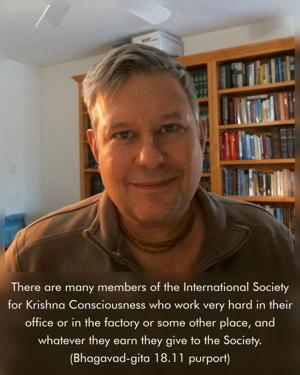
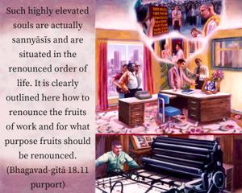

It is indeed impossible for an embodied being to give up all activities. But he who renounces the fruits of action is called one who has truly renounced.


It is said in Bhagavad-gītā that one can never give up work at any time. Therefore he who works for Kṛṣṇa and does not enjoy the fruitive results, who offers everything to Kṛṣṇa, is actually a renouncer. There are many members of the International Society for Krishna Consciousness who work very hard in their office or in the factory or some other place, and whatever they earn they give to the Society. Such highly elevated souls are actually sannyāsīs and are situated in the renounced order of life. It is clearly outlined here how to renounce the fruits of work and for what purpose fruits should be renounced.